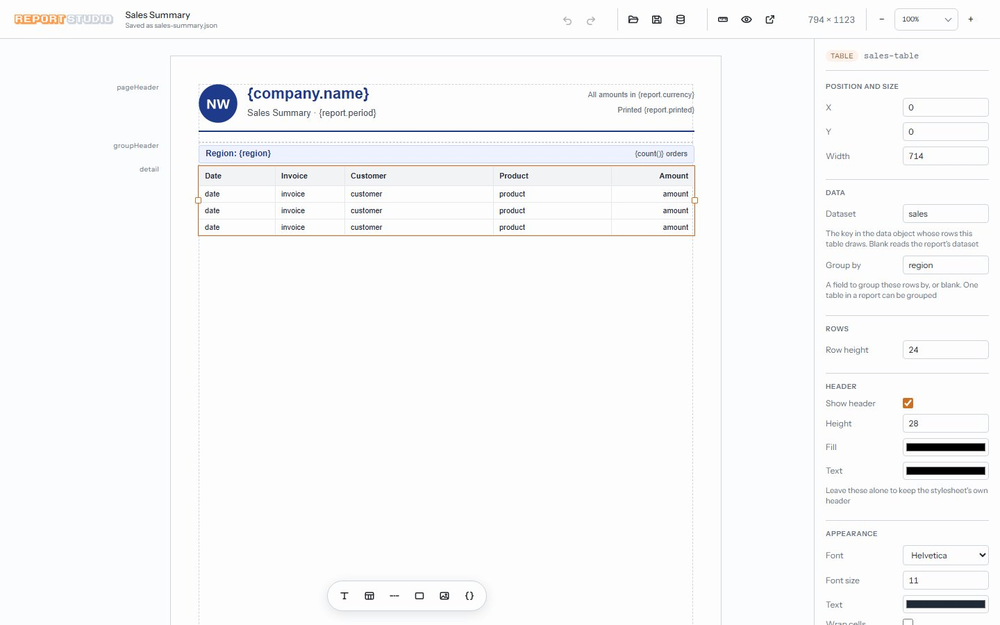
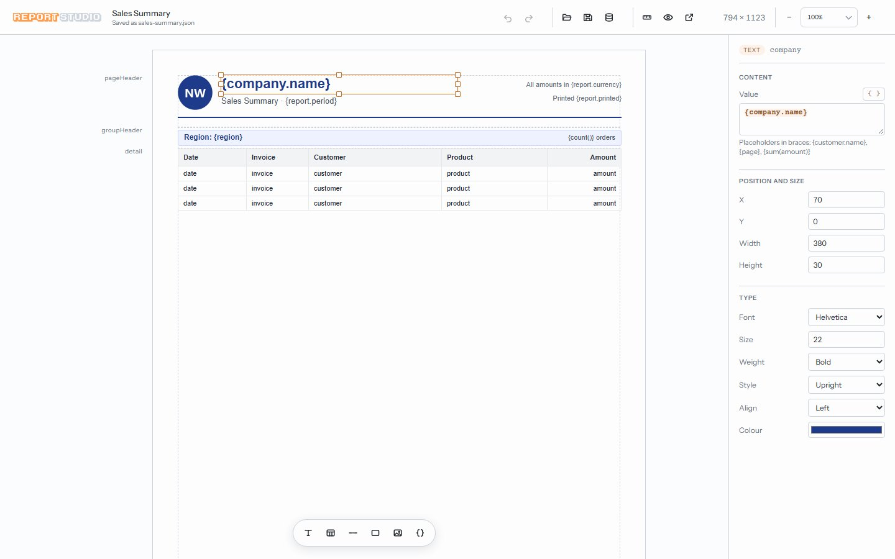
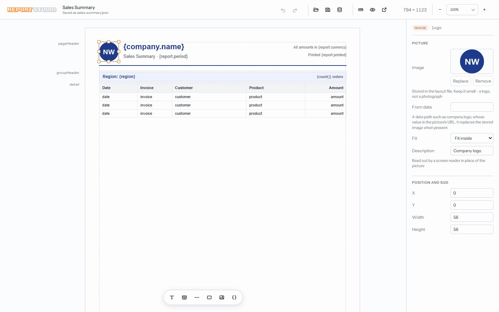
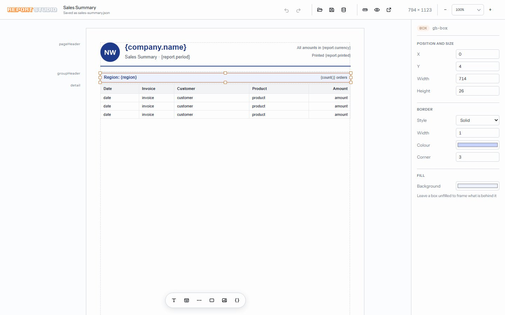
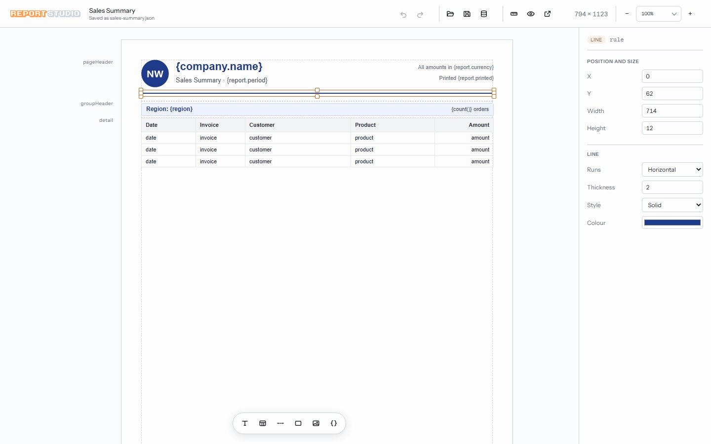
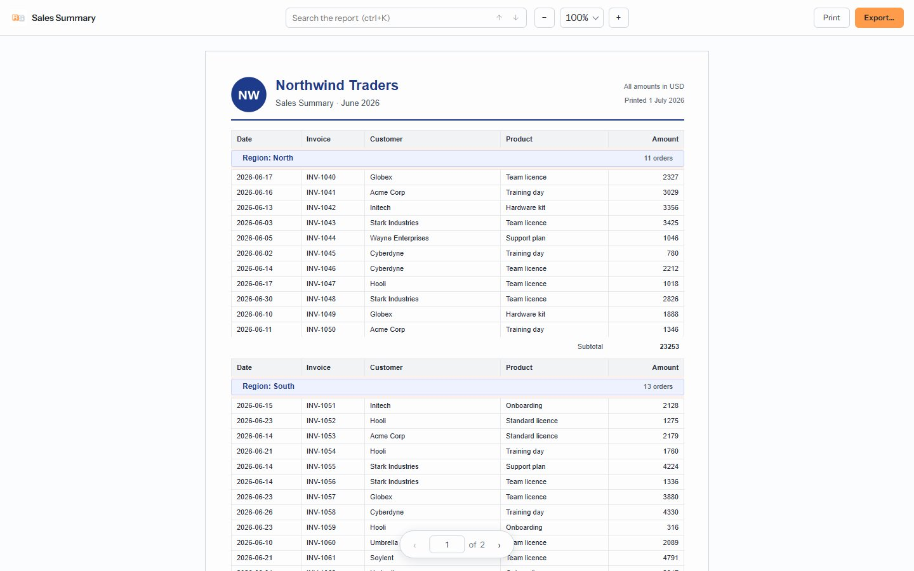
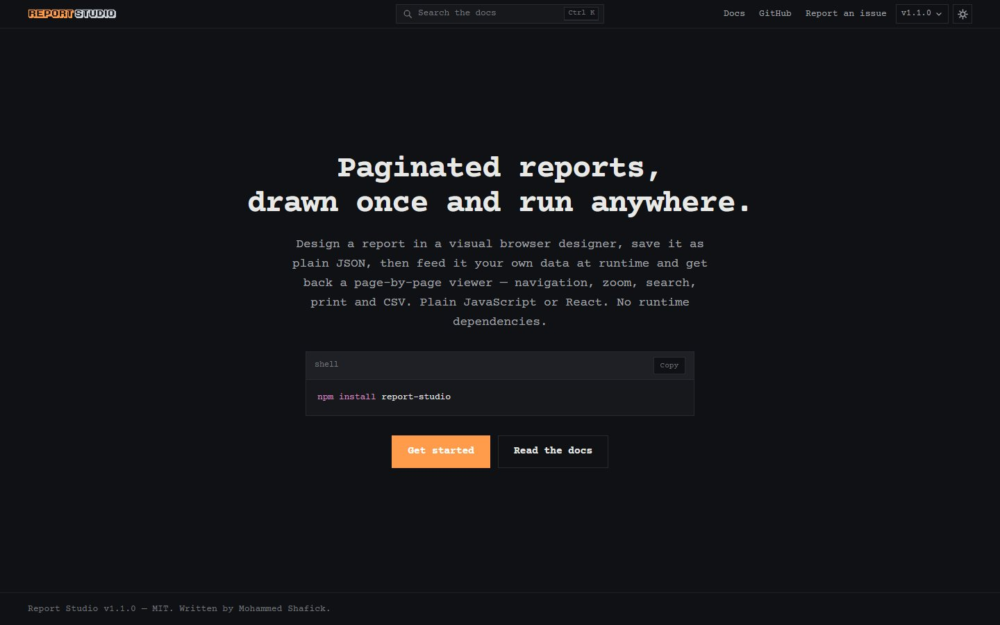

report-studio
An npm package for paginated reports. You draw a report once in a visual designer in the browser, it is saved as plain JSON, and your app feeds it data at runtime to get a page-by-page viewer with zoom, search, print and CSV export. No framework and no runtime dependencies; React components are included for apps that want them.
- year
- 2026
- status
- public open source, MIT licence
- role
- author and maintainer
- stack
- javascript, node, react, vitest
- links
- npm, docs, code on github





Why I built it
Business apps always end up needing printable reports: invoices, statements, sales summaries. The usual answer is a heavy reporting server or hand-written print CSS that breaks the moment a table runs onto a second page. I wanted the classic report designer workflow, with bands, groups and totals, as a small library that runs in any web app.
How it works
- One command,
npx report-studio design, starts the designer on a local server that reads and writes report files in your project. - Reports are built from bands (page header, group header, detail, group footer, report footer, page footer), with text, tables, images, boxes and lines placed on them. The tabs above show each one in the designer.
- Placeholders like
{customer.name},{sum(sales.amount)}andPage {page} of {totalPages}are filled in from your data at runtime. - Saving a report also writes a sample data file built from the layout, so it shows exactly what shape of data your app has to supply.
- At runtime,
buildPages(layout, data)paginates the report andcreateViewer()mounts the viewer. The renderer is plain DOM, so it works with or without React. - The designer can also be mounted inside your own app, saving through your API, so users can build their own reports.

What was hard
The engine. Turning a layout and a pile of data into pages sounds simple until the rows don't fit: a table
has to split cleanly across pages and repeat its header, and a second table below it has to move down by
however far the first one really ran. Totals have to know which group and which dataset they belong to,
and {totalPages} can't be known until every page has been laid out.
So the engine runs as a pipeline of small stages, each with one job: resolve the placeholders, group the rows, measure every band, then paginate and fill in page numbers last. Keeping the stages separate made each one testable on its own, and a test suite of over 40 files keeps them honest.

$ cd .. back to all projects